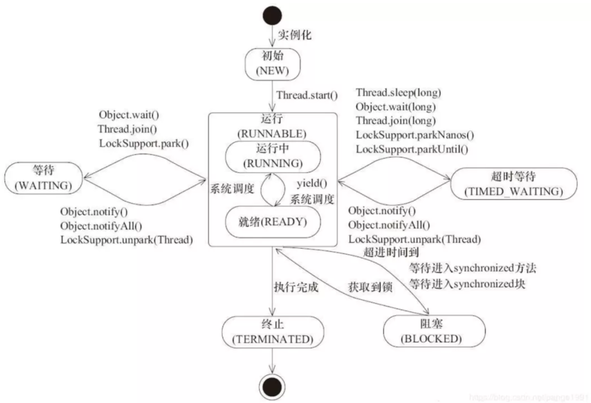

线上问题定位与分析
常见问题定位
CPU利用率高
CPU使用率是衡量系统繁忙程度的重要指标，一般情况下单纯的CPU使用率高并没有问题，它代表系统正在不断的处理我们的任务，但是如果CPU过高，导致任务处理不过来，从而引起load高，这个是非常危险需要关注的。CPU使用率的安全值没有一个标准值，取决于你的系统是计算密集型还是IO密集型，一般计算密集型应用CPU使用率偏高load偏低，IO密集型相反。
问题原因及定位
一、频繁FullGC/YongGC
查看gc日志，jstat -gcutil pid查看内存使用和gc情况
二、代码消耗，如死循环，md5等内存态操作
- 1、arthas
thread -n 5查看CPU使用率最高的前5个线程（包含堆栈，第二部分有详解）
- 2、jstack查找
ps -ef | grep java找到Java进程id
top -Hp pid找到使用CPU最高的线程（输入"1"可查看每个CPU的情况，之前有团队遇到单个CPU被中间件绑定导致CPU飚高的case）
printf '0x%x' tid线程id转化16进制
jstack pid | grep tid找到线程堆栈
CPU load高
load指单位时间内活跃进程数，包含运行态（runnable和running）和不可中断态（IO、内核态锁）。关键字是运行态和不可中断态，运行态可以联想到Java线程的6种状态，如下，线程new之后处于NEW状态，执行start进入runnable等待CPU调度，因此如果CPU很忙会导致runnable进程数增加；不可中断态主要包含网络IO、磁盘IO以及内核态的锁，如synchronized等。

CPU load average，表示的是CPU的负载，包含的信息不是CPU的使用率状况，而是在一段时间内CPU正在处理以及等待CPU处理的进程（线程）数之和的统计信息，也就是CPU使用队列的长度统计信息。通过top或uptime命令可以查看到CPU的load average信息。有三个值，分别是1分钟、5分钟、15分钟的CPU负载情况。直观的理解：高速公路收费站10个车道，那当有1-9辆车在不同的通道通过时，认为收费站的load<1；当正好10辆车在不同的通道时，load=1；当超过10辆车（假设每个通道是均匀有车）时，load>1。假设有100辆车，每个通道10辆，那就说明能有10辆车能过去，另外90辆车则需要等待，此时收费站的load为100/10=10。这个10的负载表示系统当前满负荷运转，且还有相当于90%的满负载的请求在等待。
一般业界能够被接受的值是， load average <= CPU核数*0.7。
但现在硬件越来越便宜，核数庞大的机器也越来越多，如遇到机器的CPU核数很大，那么剩余的30%部分也越大，这个时候可以适当的调整下，只要不要到整个核数都用满。
问题原因及定位
一、CPU利用率高，可运行态进程数多，排查方法见常见问题一
二、iowait，等待IO
- vmstat查看blocked进程状况
jstack --l pid|grep BLOCKED`查看阻塞态线程堆栈
三、等待内核态锁，如synchronized
jstack --l pid|grep BLOCKED查看阻塞态线程堆栈- profiler dump线程栈，分析线程持锁情况
持续FullGC
内存模型
新new的对象放在Eden区，当Eden区满之后进行一次MinorGC，并将存活的对象放入S0；当下一次Eden区满的时候，再次进行MinorGC，并将存活的对象和S0的对象放入S1（S0和S1始终有一个是空的）；依次循环直到S0或者S1快满的时候将对象放入old区，依次，直到old区满进行FullGC。
jdk1.7之前Java类信息、常量池、静态变量存储在Perm永久代，类的原数据和静态变量在类加载的时候放入Perm区，类卸载的时候清理；在1.8中，MetaSpace代替Perm区，使用本地内存，常量池和静态变量放入堆区，一定程度上解决了在运行时生成或加载大量类造成的FullGC，如反射、代理、groovy等。
回收器
年轻代常用ParNew，复制算法，多线程并行；老年代常用CMS，标记清除算法（会产生内存碎片），并发收集（收集过程中有用户线程产生对象）。
关键常用参数
- CMSInitiatingOccupancyFraction表示老年代使用率达到多少时进行FullGC；
- UseCMSCompactAtFullCollection表示在进行FullGC之后进行老年代内存整理，避免产生内存碎片。
问题原因及定位
一、prommotion failed，从S区晋升的对象在老年代也放不下导致FullGC（fgc回收无效则抛OOM）。
1）survivor区太小，对象过早进入老年代。
- jstat --gcutil pid 1000观察内存运行情况；jinfo pid查看SurvivorRatio参数；
2）大对象分配，没有足够的内存。
日志查找关键字"allocating large"；
profiler查看内存概况大对象分布；
3）old区存在大量对象。
实例数量前十的类：
jmap --histo pid|sort --n --r -k 2|head -10实例容量前十的类：
jmap --histo pid|sort --n --r --k 3|head -10dump堆，profiler分析对象占用情况
二、concurrent mode failed
在CMS GC过程中业务线程将对象放入老年代（并发收集的特点）内存不足。详细原因：
1）fgc触发比例过大，导致老年代占用过多，并发收集时用户线程持续产生对象导致达到触发FGC比例。
- jinfo查看CMSInitiatingOccupancyFraction参数，一般70~80即可
2）老年代存在内存碎片。
- jinfo查看UseCMSCompactAtFullCollection参数，在FullGC后整理内存
线程池满
Java线程池，以有界队列的线程池为例，当新任务提交时，如果运行的线程少于corePoolSize，则创建新线程来处理请求。如果正在运行的线程数等于corePoolSize时，则新任务被添加到队列中，直到队列满。当队列满了后，会继续开辟新线程来处理任务，但不超过maximumPoolSize。当任务队列满了并且已开辟了最大线程数，此时又来了新任务，ThreadPoolExecutor会拒绝服务。
问题原因及定位
一、下游RT高，超时时间不合理：业务监控、sunfire、eagleeye
二、数据库慢sql或者数据库死锁
- 日志关键字"Dead lock found when trying to get lock"；jstack或zprofiler查看阻塞态线程
三、Java代码死锁
jstack --l pid|grep --i --E 'BLOCKED|deadlock'dump thread通过zprofiler分析阻塞线程和持锁情况
NoSuchMethodException
问题原因及定位
一、jar包冲突，java在装载一个目录下所有jar包时，它加载的顺序完全取决于操作系统
mvn dependency:tree分析报错方法所在的jar包版本，留下新的
arthas：sc -d ClassName
XX:+TraceClassLoading
二、同类问题
ClassNotFoundException：编译时存在类，编译通过后，程序运行的过程中尝试使用类加载器去加载Class文件的时候，如果在classpath中没有查找到指定的类，就会抛出ClassNotFoundException
NoClassDefFoundError：当我们使用Class.forName()或者ClassLoader.loadClass以及使用ClassLoader.findSystemClass()在运行时加载类的时候，如果类没有被找到，那么就会导致JVM抛出ClassNotFoundException
ClassCastException：ClassCastException是JVM在检测到两个类型间转换不兼容时引发的运行时异常
常用工具介绍
1、tail -f跟踪文件
2、grep
-i忽略大小写
-v反转查找
-E扩展正则表达式：grep --E 'pattern1|pattern' filename
3、pgm
-b开启并发
-p指定并发数
-A开启askpass
4、awk
-F指定分隔符：
awk --F '|' '{print $1}' |sort -r |uniq -c
5、sed
时间段匹配：
sed '/2020-03-0210:00:00/,/2020-03-0211:00:00/p' filename
6、arthas
阿里巴巴开源Java诊断工具，基于javaAgent方式，使用Instrumentation方式修改字节码方式进行Java应用诊断。
dashboard：系统实时数据面板,可查看线程，内存，gc等信息
thread：jvm线程堆栈信息，如查看最繁忙的前n线程
getstatic：获取静态属性值，如getstaticclassNameattrName可用于查看线上开关真实值
sc：查看jvm已加载类信息，可用于排查jar包冲突
sm：查看jvm已加载类的方法信息
jad：反编译jvm加载类信息,排查代码逻辑没执行原因
watch：观测方法执行数据，包含出入参，异常等；
trace：方法内部调用时长，并输出每个节点的耗时，用于性能分析
tt：用于记录方法，并做回放
常见问题恢复
1、线程池满
rpc框架线程池满：高RT接口进行线程数限流
应用内线程池满：重启可短暂缓解，具体还得看问题原因
2、CPU高，load高
单机置换或重启，可短暂缓解，恢复看具体原因
集群高且流量大幅增加，扩容，恢复看具体原因
3、下游RT高：限流、降级
4、数据库
死锁：kill进程
慢sql：sql限流
总结
- cpu使用率高，通过
jstack找到具体的线程- 如果是gc线程，通过
jstat -gcutil判断其是FullGC还是YoungGC- FullGC
- jvm参数是否合理
- 大对象直接进入老年代 allocating large，通过dump分析大对象
- 如果是CMS收集器，看看进行内存整理的参数和什么时候进行内存回收参数
- dump进行内存分析，是否有泄露，或大对象生命周期设计过长
- -Xmx设置过小
- jvm参数是否合理
- YoungGC
- 新生代大小是否合理
- 如果分配合理，YoungGC最总还是会导致FullGC
- 持续的GC一般最终都会导致内存溢出
- FullGC
- 如果是业务线程，分析具体是哪个线程，是否有死循环之类
- 如果是gc线程，通过
- CPU load高
- CPU高造成的load高
- 因为锁的原因导致大量线程处于BLOCKED状态
- 内存满OutOfMemory
- 配置虚拟机参数当内存溢出时自动dump
- 通过mat工具分析具体是什么原因造成溢出
- 老年代溢出OutOfMemoryError: java heap space，-Xmx
- 永久代溢出OutOfMemoryError: PermGen space，1.7之前：-XX: PermSize -XX: MaxPermSize 1.8开始：-XX:MetaSpaceSize -XX:MaxMetaSpaceSize
- StackOverflowError
- 栈太深，递归有问题
- 通过-Xss调整单个线程的栈大小，来支持更多的线程
- 线程池满
- 通过jstack分析各个线程池在做什么事情（创建线程池是设置名称）
- 是否线程池大小设置的不合理
- 是否下游rt过高造成的线程池占满（适当的限流降级）
- NoSuchMethodException & ClassNotFoundException & NoClassDefFoundError & ClassCastException
- jar包冲突，同时有多个版本的jar包
- 上线问题，并没有发布到最新的代码
- 其它业务异常
- 首先测试环境是否可以快速重现，如果可以就在测试环境上分析，如果不行在生产环境分析
- 查看日志中否有相关的异常堆栈信息（日志异常打印规范），如果有日志收集平台，通过日志收集平台查看，否者直接通过文件定位并打印前后几行
grep -A 10 -B 10 - 如果需要参数而又没有参数，可以通过阿里开源Arthas，watch命令分析
- 客户端异常
- 收集客户端信息账号进行测试环境重现